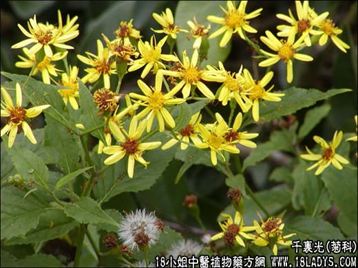

【中药概述】
千里光为菊科草本植物千里光的干燥地上部分。苦，平；有小毒。归肝经。
1．用于热毒疮痈、肠痈、湿疹等证。单用煎汁，也可配伍野菊花，蒲公英等药同用。
2．用于热毒或湿热泻痢。单用或与凤尾草，铁苋等配伍。
3．用于目赤肿痛。可与夏枯草，野菊花等配伍。
近代用于上呼吸道感染，扁桃体炎，咽喉炎，肺炎，肠炎痢疾，阑尾炎，丹毒疖肿等。千里光50g，加水50毫升水煎，日服3次。
【药效鉴别】
千里光只宜于眼疾实热证。与其他清肝明目药不同的是：清热解毒作用好，临床应用广。
【药理作用】
煎剂有广谱抗菌作用。对金黄色葡萄球菌、流感、伤寒、痢疾杆菌有较强的抗菌作用。
【化学成分】
含毛茛黄素、菊黄质、对羟基苯乙酸、水扬酸、香草酸氢醌及生物碱等。
【用量用法】
本品9——20g，水煎服，或入丸散剂。